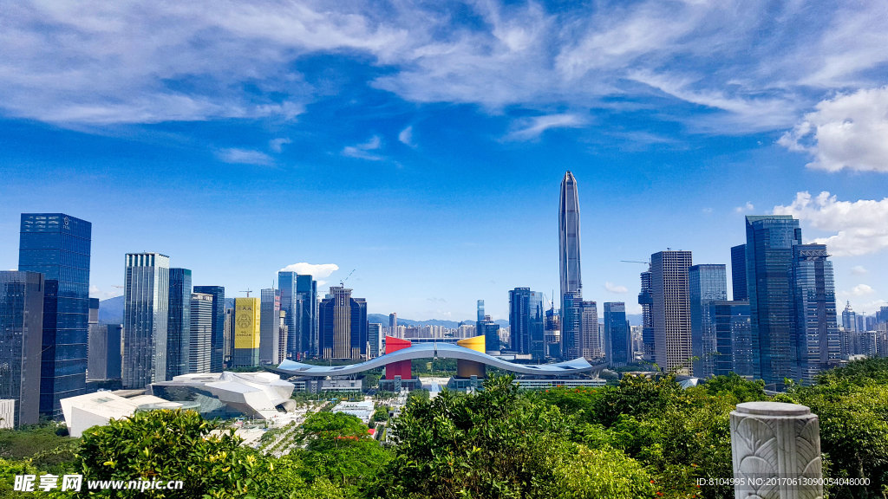
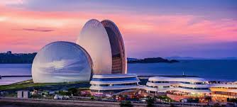
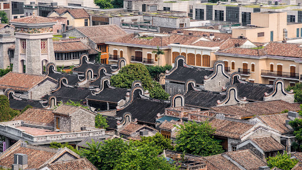
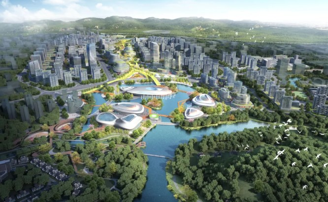
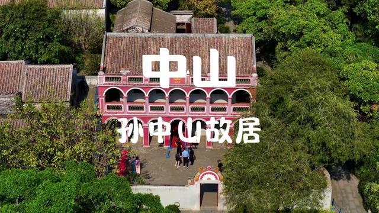
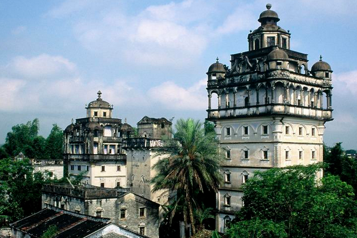

广州
国家中心城市 · 综合性门户城市
广东省省会，华南地区交通枢纽与商贸中心，集聚优质教育、医疗、文化资源，千年商都底蕴与现代都市活力交融共生。

深圳
中国特色社会主义先行示范区 · 科技创新中心
坐拥华为、腾讯等龙头企业，聚焦人工智能、生物医药、新能源等新兴产业，是大湾区当之无愧的“创新引擎”。

珠海
生态宜居海滨城市 · 珠江西岸核心城市
环境优美的海滨之城，毗邻澳门，旅游业发达，同时发力高端制造业与高新技术产业，宜居宜业属性突出。

佛山
先进制造业基地 · 岭南文化名城
以家电、陶瓷产业闻名全国，拥有美的、碧桂园等知名企业，制造业实力雄厚，同时传承醒狮、武术等岭南文化精髓。
惠州
珠江三角洲中心城市 · 电子信息产业基地
坐拥西湖、巽寮湾等优质旅游资源，自然资源丰富，同时是重要的电子信息产业基地，产业与生态协同发展。

东莞
世界工厂 · 制造业转型升级标杆
素有“世界工厂”之称，聚焦电子信息制造，是全球产业链关键环节，近年加速向高端制造、智能制造转型升级。

中山
装备制造特色城市 · 历史文化名城
以装备制造、健康医药产业为特色，是珠江口西岸重要交通枢纽，诞生了伟大的革命先行者孙中山先生，历史底蕴深厚。

江门
大湾区西翼门户 · 著名侨乡
承担产业转移与区域协作功能，制造业与旅游业协同发展，拥有开平碉楼等世界文化遗产，是中国侨都，侨乡文化浓郁。
肇庆
连接大西南节点城市 · 生态旅游名城
位于大湾区西北部，坐拥七星岩、鼎湖山等优质生态资源，积极发展先进制造业与现代服务业，是大湾区的“后花园”。